Installation
Installing the BASE sensor (ethernet)
Overview
General
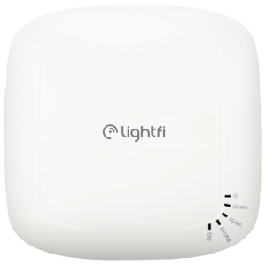
The BASE is a long-range, occupancy level sensor that makes up the core of LightFi’s multi-sensor wireless IoT infrastructure. It acts as a gateway and can support 100s to 1000s of LightFi’s IoT sensors. The BASE Pro version includes BACnet/IP integration with all connected IoT sensors for building automation capabilities. This documentation describes how to install the BASE sensor and provision it on LightFi’s Portal online.
What is included
The BASE sensor comes with a power supply and a mounting bracket. Some models may also come with a USB dongle, which receives data from LightFi's other IoT sensors. Please ensure the USB dongle is plugged into the BASE’s USB port before installation. (On most models this functionality is built into the BASE unit.)
Placement
The BASE sensors is designed to be ceiling mounted. We recommend that each BASE sensor cover a 10m – 15m radius (100-250m²) of the floor plan when determining install locations. For open-plan areas, a coverage radius of 20m may be acceptable. For sites with many walls a coverage radius of < 10m may be necessary. A typical install location is near existing WiFi Access Points.
Power
The BASE sensor can be powered via DC power input or Power over Ethernet (PoE) 802.3af (48V) via the POE Port. In almost all instances, we recommend using PoE, as this will provide data and power over a single cable. Where PoE is not available the device can be powered using the DC power input port (it is not necessary, or desirable to power using both PoE and DC input simultaneously).
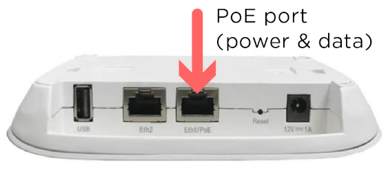
Cabling topology for the BASE sensors
The cabling topology for the BASE sensors will depend on available network ports throughout the building. The BASE sensors are powered with Power over Ethernet (PoE) 802.3af, such that power and data can be handled with a single Ethernet cable.
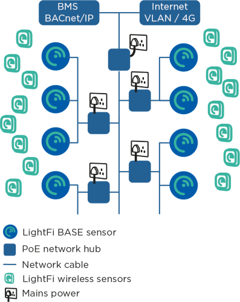
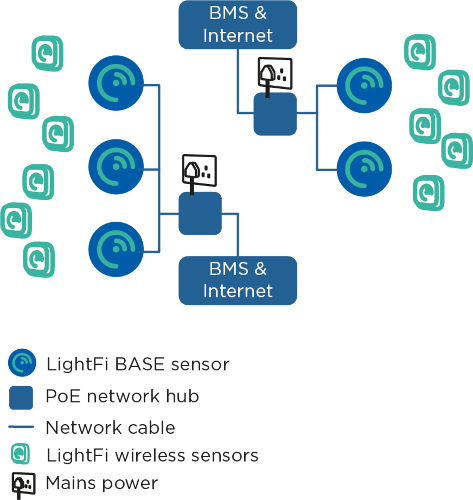
Using existing network ports
The simplest install is to utilise any available spare network ports across the building. The BASE sensors can be plugged into existing ports (with PoE) and connected via a VLAN, or a physically separate network at the comms room. If no network ports are available, new cables need to be run.
Running new cables
The BASE sensors can be ceiling mounted (similar to WiFi Access Points). CAT5E, CAT6 or better network cables need to be run from the BASE sensors to a nearby network connection point, such as a BMS panel or comms room. The network cables will provide power to the BASE sensors, as well as a connection to the internet and BACnet/IP communication with the BMS (where relevant). The cabling topology will depend on the location of available connection ports. Two topology examples are provided below. In the first example a building has a single BMS panel in the plant room and an internet connection in the comms room. In the second example, there is a BMS panel on each floor with an internet connection.
Provisioning the BASE sensor
To provision the BASE sensor on LightFi’s Portal, you will need to following: - Base sensor powered and connected to the internet - Ethernet cable - Physical access to the BASE sensor - Laptop computer with an Ethernet port and WiFi connection
1 - Boot sensor
Please ensure the BASE sensor is powered and connected to the internet. The LEDs indicate the status of the BASE sensor:
- First LED on – the BASE sensor has power
- Second LED on – the BASE sensor is connected to the internet
- Third LED on – the BASE sensor is detecting occupancy. Once plugged in, please allow 5 minutes for the boot sequence to finish before any troubleshooting.
2 - Setup service port connection
(Before you make the changes to your network configuration, note your default LAN settings before changing them, this will help when resetting them back when finished.)
Please ensure your computer is connected to the internet e.g. via WiFi. Setup your computer’s wired (Ethernet) network settings to enable connection to the BASE sensor via its Service Port. Change the LAN configuration settings on your computer to “manual” and use the static IP Address: 192.168.151.2 and press Apply. (Use a default Subnet Mask of 255.255.255.0 and leave the other settings empty, as there is no internet connection from the BASE sensor via the Service Port for security reasons). Your LAN settings are located in:
- Apple: System Preferences > Network > {your LAN Service} > Configure IPv4 : Manually
- Windows: Windows Settings > Network & Internet > Advanced network settings : Change adapter options > Ethernet : Properties > Internet Protocol Version 4 (TCP/IPv4) : Properties > Use the following IP address

3 - Connect to sensor
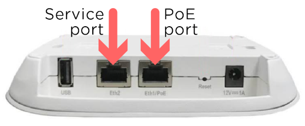
Connect an Ethernet cable from your computer to the Service Port on the BASE sensor. Please ensure the POE Port is also connected to the internet.
4 - Launch Provisioner
Please open your web browser (e.g. Google Chrome) and enter http://192.168.151.1 into the address bar. You will be greeted by the BASE sensor’s service page, indicating that you are now connected to the BASE sensor, to the internet and the BASE sensor is itself connected to the internet.
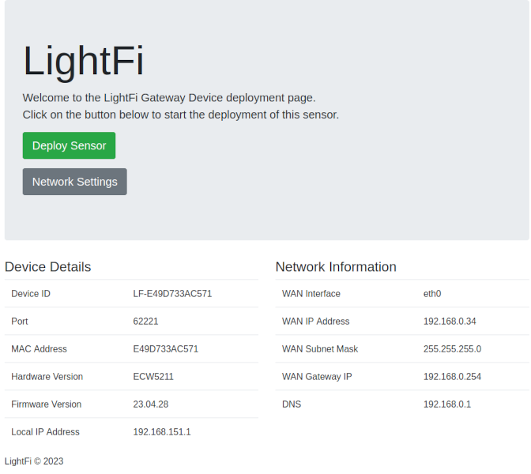
If the BASE sensor greeting page says “No Internet!”, please check the BASE sensor’s POE Port is connected to the internet and refresh the web-page. You may need to change the device network settings for your network/internet setup, if so click the "Network Settings" button, you will require the local config password shipped with your device (the password can be changed from the Network Settings page).
To begin provisioning your BASE sensor on LightFi’s Portal, press “Deploy Sensor”. Please ensure your computer is connected to the internet e.g. via WiFi. You will be redirected to the LightFi Portal, where you can login to your LightFi account and create the sensor.
5 Select location
In the top left corner, select the building and floor where you want to create this BASE sensor using the dropdown. Then press “Next”.
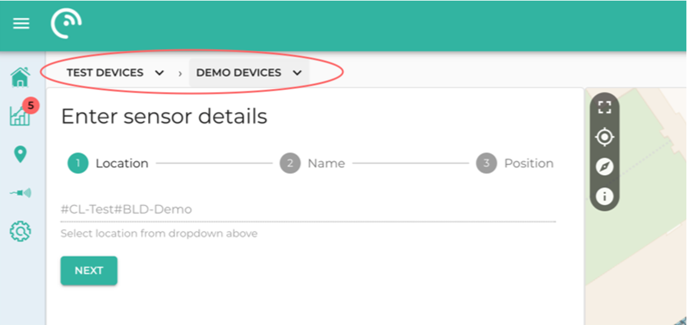
6 Add sensor details
Give the BASE sensor a name (usually the name of the area it covers), and press “Next”. Click on the floorplan to give the sensor a position (as close to where it is or to be located so that others can find it later), and then press “Preview”.
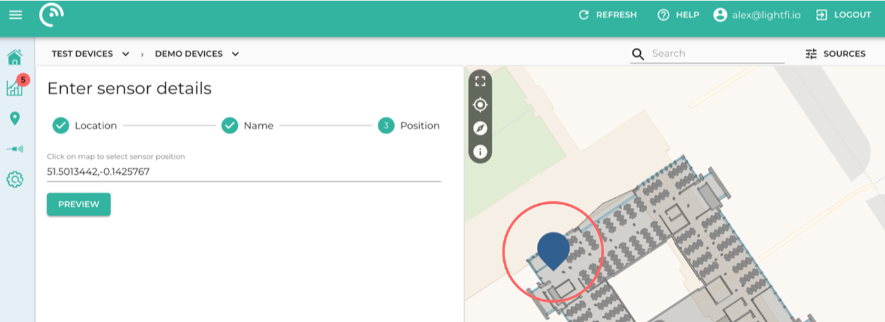
7 - Check details
Check you’re happy with the details you’ve entered and the location tree in which you’re creating the sensor.
8 - Confirm
Press “Confirm Details” and then “Create” to provision the sensor. Your browser may ask for security confirmation, in which case you will need to allow the connection by pressing “Send Anyway” (or similar).
9 - Provisioning
The BASE sensor is now being provisioned. Please do not unplug the BASE sensor from the computer (or internet) until the web page says that the setup has been completed. The BASE sensor will then reboot. Please allow up to 5 minutes for the BASE sensor to appear on the LightFi Portal and 10 minutes for the first data to arrive.
Installing Sub-sensors
Overview
Installation of LightFi sub-sensors such as Sahara (Air Quality), Alpine (CO₂/Temperature/Humidity), Hoth (Temperature/Humidity) or X1 (PIR Motion) can be performed entirely using the LightFi portal.
To perform the configuration, you will need the following:
- The BASE sensors installed and provisioned
- A smartphone or similar portable device, ideally with a functional camera or a computer with web browser
- An internet connection
Configuration
1 - Place sensor
Installed the sensor in the room or location you want to monitor, power the sensor as per the sensor instructions. Ensure that it is physically accessible to you or that you have recorded the details needed below.
2 - Select Install Location
Login to your LightFi Portal account in a web browser on your phone. Open the main menu (top left) and go to the “Config” page. Using the dropdown at the top of the screen, select the building and floor (sub locations) where the sensor is installed.
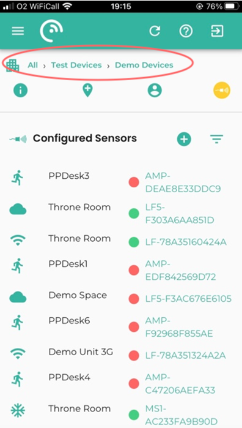
3 - Find the sensor
To find the new sensor click on the “+” in the “Configured Sensors” section. A list of all IoT sensors near any BASE sensor on that floor (and not already configured) will appear. To find a specific sensor you can press the Search icon and either:
- press the square Frame icon to the left of the search bar and scan the sensor’s QR code with your camera; or
- manually type in the sensor’s id (last 4 digits is usually enough)
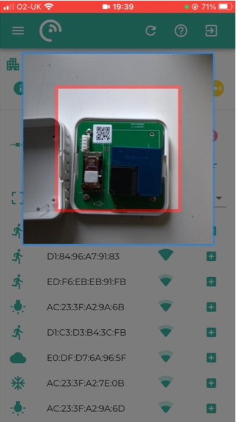
4 - Add details
Once you've found the sensor you want to configure, press the square “+” to its right. Please give it a name representing the room or area (so it is easy to find later). Scroll down and give the sensor position on the floor plan (by pressing on the floor plan in the room or area where the sensor is located). If the floor plan is not initially on screen, click on the “Go to location” icon in the top left corner of the map.
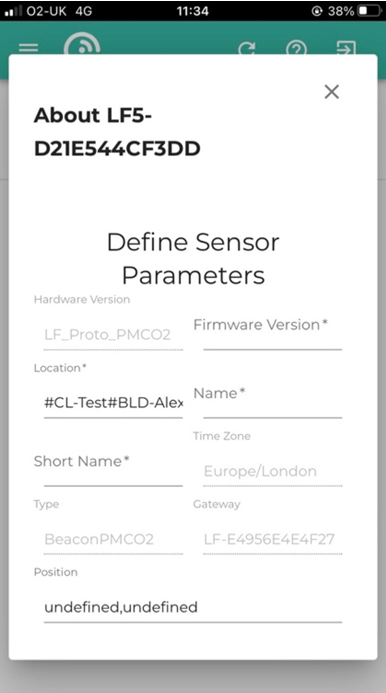
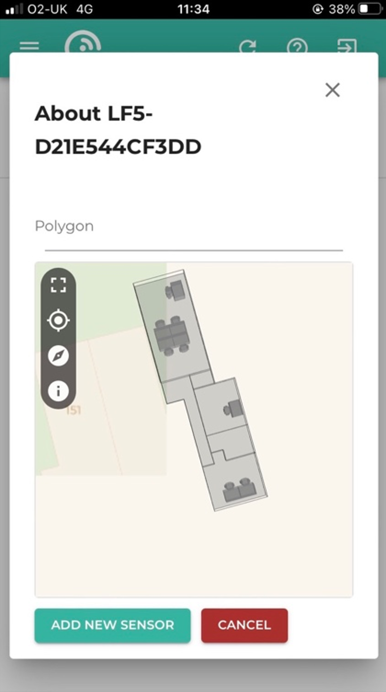
5 - Complete
To complete the setup, press “Add New Sensor”. The sensor is now configured on the LightFi Portal, and data is being collected.